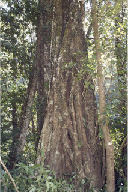

Images :



| Habit : | Large trees , beginning as epiphytic later become strangler and independent, up to 25 m tall. |
| Leaves : | Leaves simple , alternate , spiral ; stipules to 3.5 cm long, lanceolate , glabrous , caducous leaving annular scars; petiole stout, 2.5-4 (-10) cm long, canaliculate , glabrous ; lamina 10-25 x 5-15 cm, ovate , apex acuminate , base rounded to subtruncate , margin slightly undulate , thickly coriaceous , glabrous , drying brown; midrib flat above; secondary_nerves 12-15 pairs, looping near margin; tertiary_nerves broadly reticulate . |
| Inflorescence / Flower : | Inflorescence syconia, in axillary pairs, ovoid or obovoid , glabrous ; peduncle 1.5-2 cm long; flowers unisexual , occurs with in the inner wall of syconia. |
| Fruit and Seed : | Syconium, monoecious , to 2.5 cm across, green, spotted with yellow when ripe, peduncle stout; achenes , obovoid , smooth. |